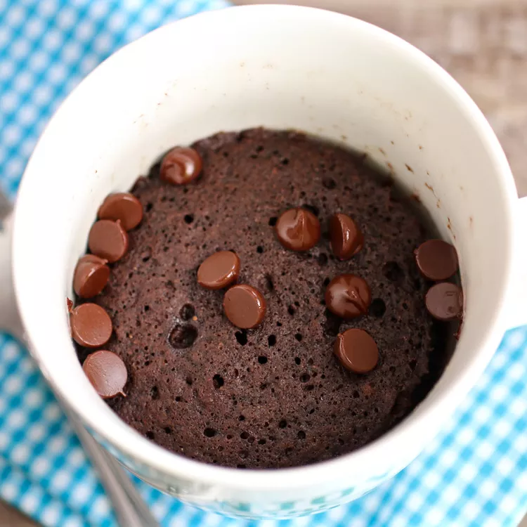

This chocolate mug cake is made in the microwave for a fudgy, chocolaty
treat that is truly decadent. It's a great recipe for nights when I need a
yummy dessert that's ready in less than 10 minutes! Add a few chocolate
chips to make it extra rich and gooey.
Recipe by safinabakes1231 Updated on April 20, 2023
This easy mug cake is easy to make with basic ingredients and comes
together quickly in the microwave. What’s not to love?

How to Make a Mug Cake
You'll find a detailed ingredient list and step-by-step instructions in
the recipe below, but let's go over the basics:
Mug Cake Ingredients
You likely already have all the ingredients for this chocolate mug cake
recipe on hand. Here’s what you’ll need:
Flour: This easy chocolate mug cake recipe starts with all-purpose
flour.
Sugar: Sugar sweetens things up and balances the bitter cocoa powder.
Cocoa powder: Two tablespoons of unsweetened cocoa powder ensures a rich
chocolate cake.
Baking soda: Baking soda acts as a leavening agent, which means it helps
the mug cake rise.
Salt: A pinch of salt enhances the overall flavor of the mug cake, but
it won’t make it taste salty.
Milk: Milk keeps the cake batter from drying out during the microwaving
process.
Oil: A neutral oil, such as canola oil, keeps the batter moist without
adding flavor.
Water: A tablespoon of water helps create the perfect texture.
Vanilla: A dash of vanilla extract is the perfect finishing touch.